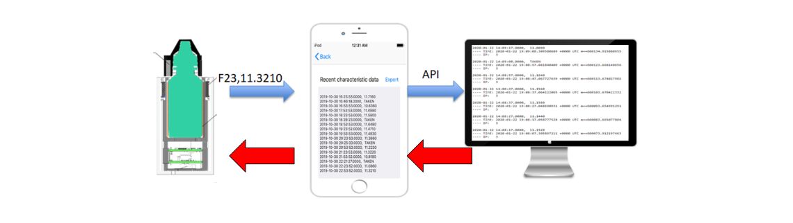
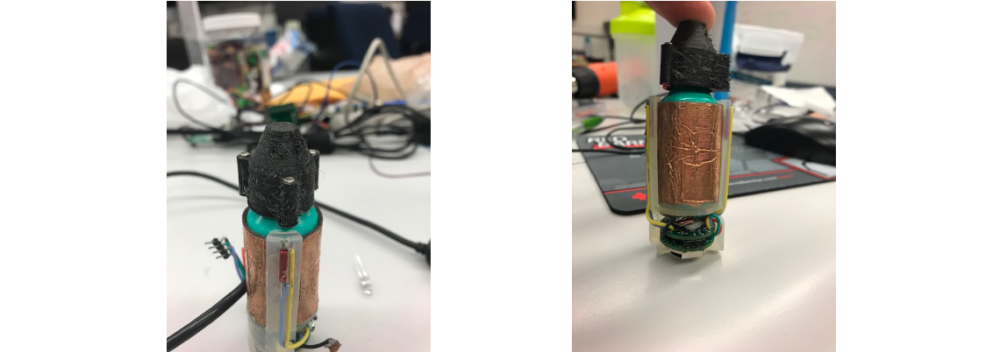
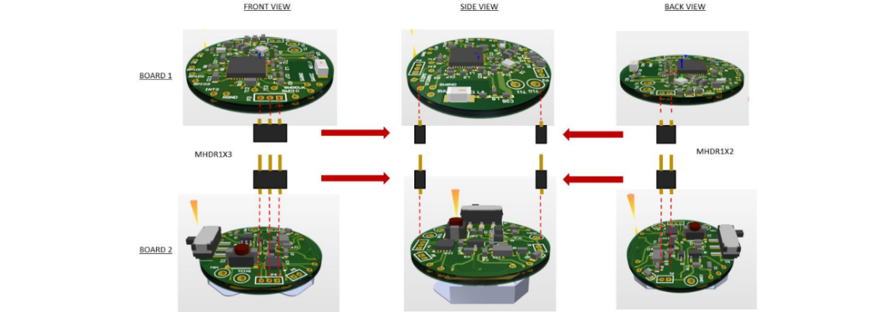
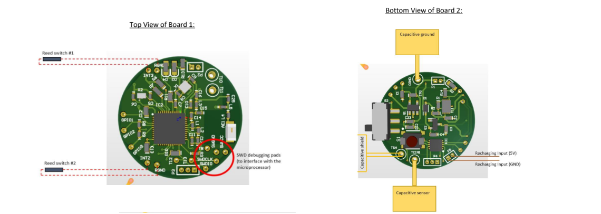
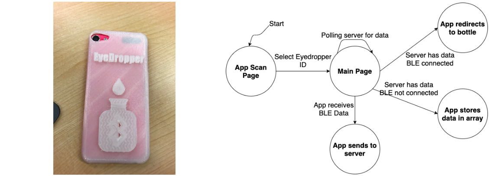

Glaucoma is the leading cause of irreversible blindness worldwide and the third leading cause of irreversible blindness in the U.S. With proper adherence monitoring systems, healthcare providers can reach out to patients and remind them to properly take their medication on time. However, such adherence systems are difficult to develop due to extensive time and costs associated with getting approval from the Food and Drug Administration (FDA). This project helps to mitigate these costs by developing a non-invasive protable sensor embedded system that would surround an FDA approved eyedropper medication.
Two PCBs were developed, one stacked on top of the other, and placed inside a slot below the eyedropper bottle. These PCBs contained sensors and a microcontroller which ran real-time classification algorithms to determine when the eyedropper medication was properly dispensed. Each use event was then sent as a package via BLE to a Wi-Fi capable device which parsed and redirected the packaged data to a web server for proper data logging and feedback.
The skeleton structure (center) was created with just enough circumference to fit an eyedropper bottle. In order to determine fluid level as well as if the bottle has been squeezed, a capacitor is wrapped around the structure. The side of the structure also has openings to feed wires to the top, where it is attached to reed switches. These switches are used with the magnets on the cap (right) to determine when the cap is off. After assembling the PCBs and passing in the wires, a sleeve (left) is placed on top to protect the PCBs from environmental damage.
The challenge with the PCBs was dealing with the limited diameter. This led to the design decision to have two PCBs since there was not any limitation in height. The two PCBs would communicate data back and forth through header connectors that would also give the stacked structure of the PCBs.
The top PCB contained all the components to properly interface with an nRF51422 BLE microcontroller. A chip antenna and RF components were used to draw out the optimal power for wireless communication. Through holes were used to pass wires from the PCB to the top to determine reed switch states.
The bottom PCB contained through holes to use wires and connect the capacitor in the inner sleeve with the FDC1004 capacitance-to-digital converter. The PCB also had the BNO080 Inertial Measurement Unit (IMU) sensor, which captures any change in acceleration and tilt from the eyedropper. A secondary coin cell battery was placed behind, which powered the two PCBs. The bottom PCB also possessed logic to recharge the coin cell battery, and LEDs to display charge and connection status.
The high-level logic for the eyedropper is as follows:
The nRF51422 microcontroller was used to code all the logic to gather sensor data and determine if the eyedropper medication was dispensed. Prior to PCB design, the logic had to be verified using launchpads in order to determine if the sensors were accurate enough to properly detect a use event. Using launchpads and breadboards to help interface the microcontroller with the sensors helped to determine the correct hardware configuration necessary for the PCB.
The code was developed in C using Segger Embedded Studio (official nRF supported IDE). The FreeRTOS library was used since the bottle needed to sit idle until the fluid level and connection status needed to be checked at given intervals. FreeRTOS helped to use the low power timer to wake up the bottle when it was time for an event, thus saving on CPU execution.
The iOS app used to connect the bottle to the web server was developed in Swift. The high-level logic for the app is as follows:

A version of the app was developed to export and email raw sensor data as an excel sheet. This was because we conducted clinical trials with a bottle
and the app, which was done to gather training data to develop the machine learning algorithm.
After setting up a bottle and validating the app can receive raw sensor data, we conducted clinical trials to gather data to be used for machine learning. The target audience for this system was participants over the age of 65. They performed a series of tasks in a controlled experimental environment, which simulated how the bottle would be used in a real-world scenario. These tasks included:
We used timestamps on the app to record when the bottle was properly taken, and this timestamp was appened to the excel sheet prior to sending it with the raw sensor
readings via email. These csv files were used as training data to create an optimal machine learning algorithm that could properly determine if medication has been
dispensed from the bottle.
To comply with University of Michigan protocols, all participants personal IDs remained anonymous, and raw sensor data was
published for public use
The machine learning algorithm was developed using Weka, which used the labeled CSVs from the clinical trials as training data.
Prior to using Weka, the sensor data gathered went through a process known as featurization, to convert it into something meaningful for proper classification.
Weka then used the data to train and compare the classification performance of different supervised machine learning algorithms. The following plot
which compares the True Positive Rate (TPR) vs False Positive Rate (FPR) shows that Random Forest was the most optimal algorithm.
Weka also has an information gained (IG) attribute, which can determine the percentage of total information the model gained by a feature in classifying use events. This means we can use this information to determine which sensors contribute the most to classification, and which sensors can be removed to further save power.
Special thanks to Dr. Alanson Sample and the ISC Lab for help advising the hardware and firmware development of the bottle.
Special thanks to Dr. Paula Anne Newman-Casey for the initial concepts and innovative ideas, as well as helping with the clinical trials.
Special thanks to Nolan Blue and Dr. Alex Shorter for their work in developing the mechanical designs and 3D printing the bottle skeleton and sleeve. Credit
also goes to Nolan Blue for helping prototype the sensors and working on parts of the paper.